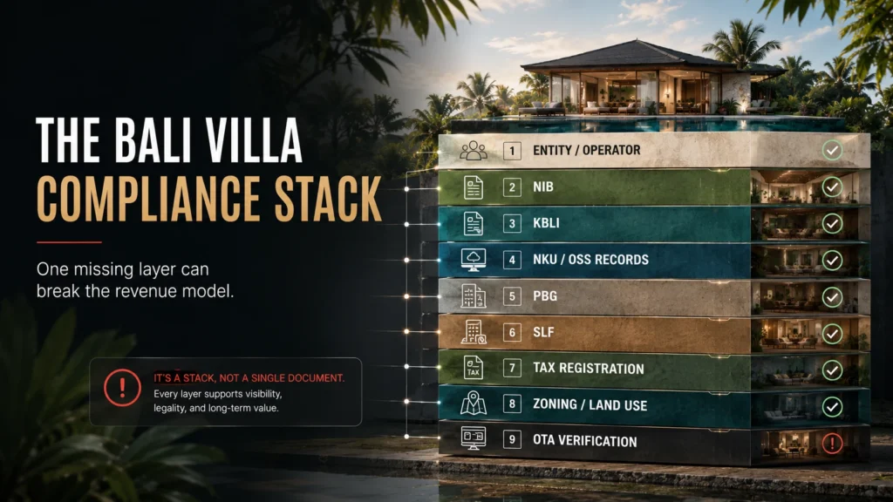
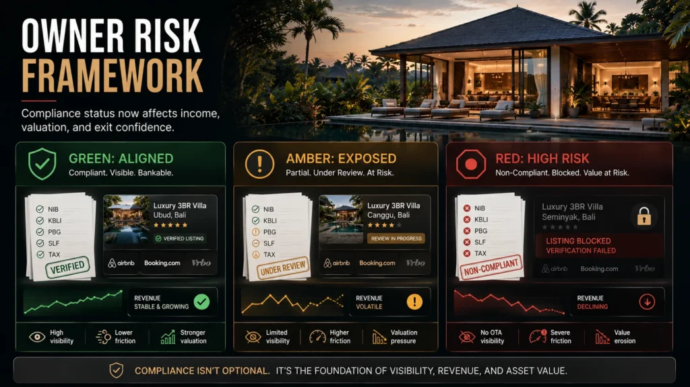
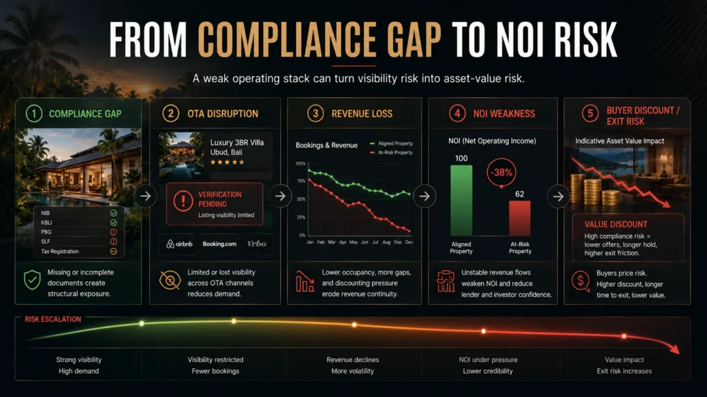

Bali short-term rental compliance is no longer a back-office paperwork issue. The biggest risk for many Bali villa owners is no longer low season. It is losing legal visibility before the owner understands why.
For years, many short-term rental villas in Bali operated in the gap between strong demand and weak formalization. That gap is now closing. After the March 2026 OTA compliance deadline, villa owners need to stop treating licensing as “admin” and start treating it as part of the revenue engine, asset protection system, and exit-value story.
This article is written for owners, investors, developers, operators, asset managers, and family offices. It is not legal advice. It is an operator-first compliance and commercial risk guide for understanding what must be checked before a Bali villa is listed, purchased, managed, refinanced, or scaled.
Key Takeaways
- Bali short-term rental compliance is now connected to distribution. Kemenpar is moving toward OTA verification using NIB, KBLI, and NKU data connected with OSS, meaning platform visibility is becoming tied to formal business licensing.
- The issue is not only “having an NIB.” Owners must check whether the business classification, building approvals, zoning, tax registration, and real operator structure match the way the villa is actually used.
- Approximately 1,600 unlicensed accommodation businesses were reported as facing potential OTA delisting from 1 August 2026 if they failed to legalize or prove their status within the compliance window.
- A villa with weak compliance is commercially fragile: it can lose OTA visibility, face handover problems, create tax exposure, reduce buyer confidence, and weaken NOI credibility.
- For serious owners, the right question is no longer “Can I still list this villa?” The right question is “Is this asset legally, operationally, and commercially bankable?”
Why Bali Short-Term Rental Compliance Matters Now
The Bali short-term rental market has moved from informal tolerance toward structured verification.
In May 2026, Indonesia’s Ministry of Tourism confirmed that it is strengthening cooperation with Online Travel Agent platforms to improve the governance of tourism accommodation sold through digital platforms. The Ministry’s plan is to use API-based verification so that accommodations marketed online can be checked against business licensing data. In the planned implementation, OTA merchants are expected to submit three main data points: NIB, KBLI, and NKU, which are then matched with OSS records. If the data matches, the accommodation can be verified; if not, the submission can be rejected or stopped. See the official Kemenpar OTA verification framework.
This matters because the OTA platform is no longer only a sales channel. It is becoming a compliance gate.
Kemenpar also stated that once the API system is active, OTA operators must ensure that accommodations are not marketed without a valid NIB and appropriate KBLI. The Ministry targets the API system launch for June 2027, but enforcement pressure is already visible.
DetikTravel reported that the Ministry had identified around 1,600 unlicensed accommodation businesses still marketed on OTAs, with potential delisting from 1 August 2026 if they fail to process or prove their permits within the two-month window. See the DetikTravel report on 1,600 unlicensed accommodations facing OTA delisting.
For Bali villa owners, the signal is clear: distribution risk is now compliance risk.
This is also why villa owners should not isolate this topic from broader investment planning. A serious Bali hotel feasibility study should test licensing, operating structure, distribution risk, and owner-side commercial exposure before capital is fully committed.
What Changed After the March 2026 OTA Deadline?
The practical change is not that Bali has “banned Airbnb.” That is the wrong frame.
The better frame is this:
Bali’s short-term rental market is moving from informal listing access to license-backed platform eligibility.
The Bali Provincial Government published a February 2026 statement in which Governor Wayan Koster asked Airbnb to remove tourism businesses in Bali that are not licensed and not tax-compliant. The statement also referred to the direction that tourism services should be licensed and pay tax by the end of March. See the Bali Provincial Government statement on Airbnb, licensing, and tax compliance.
That is why the March 2026 reset matters. It marks the moment when villa owners should assume that OTA visibility, legal status, and tax discipline are no longer separate matters.
For an owner, this means a villa may face risk even if it has historical bookings, good reviews, strong occupancy, or a professional management company. The question is whether the operating structure can survive verification.
For related owner-side context, Zenith’s article on the hidden cost of illegal villas in Bali explains why enforcement risk should be treated as a commercial exposure, not only a legal headline.
The Core Problem: Many Villas Were Built as Income Assets Without a Legal Operating Stack
Many villas in Bali were sold, financed, leased, or managed as income assets before their operating legality was fully checked.
That creates a serious mismatch.
A property may be beautiful, well-designed, and fully booked, but still weak as an investment if the following are unclear:
| Risk Area | Owner Question |
|---|---|
| Entity | Who is the real legal operator? |
| NIB | Does the operating entity have a valid NIB? |
| KBLI | Does the KBLI match actual short-term accommodation activity? |
| Building | Does the asset have the correct PBG and SLF status? |
| Zoning | Is short-term tourist accommodation allowed on this plot? |
| Tax | Is local accommodation tax properly registered, collected, and reported? |
| OTA | Can the owner prove the required data to the platform? |
| Management | Does the management agreement match the license holder and revenue flow? |
This is where many owners misunderstand the issue. Compliance is not one document. It is a stack.
A villa with one missing layer may still operate for a while. But as soon as platforms, buyers, tax offices, banks, or operators ask harder questions, the weakness becomes visible.
For foreign investors, this issue often overlaps with broader entity and licensing structure. Zenith’s hotel licensing Indonesia foreign investor roadmap explains why PT PMA, OSS, NIB, KBLI, building approvals, and operational readiness need to be sequenced as one legal-commercial path, not treated as disconnected tasks.
The Permit Stack Villa Owners Must Check
Villa owners should not begin with the question, “Which document do I need to upload to Airbnb?”
They should begin with the full operating stack.
| Compliance Layer | What It Means | Why It Matters Commercially |
| NIB | Business Identification Number through OSS | Basic business identity and platform verification input |
| KBLI | Business classification | Must match real activity, such as villa accommodation |
| NKU | Business activity number used in licensing records | Part of Kemenpar’s planned OTA verification data set |
| PBG | Building approval | Confirms building permission basis |
| SLF | Functional-worthiness certificate | Supports safe and approved use before operation |
| Tourism standard / certification | Relevant tourism operating standard | Supports formal accommodation operation |
| Tax registration | Local and national tax compliance | Protects against back-tax exposure and owner disputes |
| Zoning / spatial use | Whether accommodation use is allowed on the plot | Determines whether legalization is structurally possible |
Official OSS data identifies KBLI 55193 / Vila as a classification for accommodation services involving private houses rented to tourists with facilities and managed by the owner.
The official PU portal defines PBG as approval for building construction, alteration, expansion, reduction, or maintenance according to technical standards, and SLF as the certificate stating a building’s functional worthiness before it is used. See the Kementerian PU SIMBG portal for PBG and SLF.
This is why NIB-only thinking is dangerous. NIB is essential, but it does not automatically fix the building, zoning, tax, or operator mismatch behind the asset.
For owners who want broader background on Bali-specific compliance traps, Zenith’s guide to Bali’s licensing maze for foreign investors is a useful companion article.

Villa License vs Pondok Wisata: Why the Structure Matters
Many owners hear “Pondok Wisata” and assume it is the easy solution. That can be a mistake.
Official OSS data identifies KBLI 55130 / Pondok Wisata as accommodation provided on a daily-payment basis by an individual using a residential building lived in by the owner and partly rented to guests.
That is not the same operating logic as a foreign-investor villa portfolio, a remote-owner commercial villa, or a multi-villa rental operation managed like a boutique hotel.
The owner-side implication is simple:
| Structure | Common Use | Main Risk |
| KBLI 55193 / Vila | Commercial villa accommodation | Must match entity, zoning, building, and tax status |
| KBLI 55130 / Pondok Wisata | Owner-lived homestay-style accommodation | Often misapplied to commercial villa models |
| Management company model | Third-party operator manages villa | May not solve license-holder mismatch |
| Nominee-style arrangement | Informal local holding structure | Can create control, tax, legal, and exit risk |
| Long-term rental pivot | Non-OTA rental use | May protect income but changes revenue model and valuation |
For investors, this matters because the license must match the commercial reality. A villa that earns like a hotel but is structured like an informal homestay is not cleanly investable.
What Most Owners Get Wrong
1. “I have an NIB, so I am compliant.”
Not necessarily. Kemenpar’s OTA verification framework refers to NIB, KBLI, and NKU, not only NIB. The data must match OSS and the platform’s verification logic.
2. “My villa has been on Airbnb for years, so it must be fine.”
Historical visibility is not proof of current compliance. The market is moving from legacy listing access to verified listing eligibility.
3. “The management company will handle it.”
A management company can help operate, report, and coordinate. But if the wrong entity holds the license, the wrong KBLI is used, or the building/zoning stack is weak, management alone does not solve the underlying asset risk.
4. “Pondok Wisata is the simple workaround.”
Pondok Wisata is not a generic villa-investor license. Official descriptions tie it to owner-lived residential accommodation and local-community logic.
5. “Compliance is only a legal issue.”
Compliance affects revenue continuity, buyer due diligence, bankability, management handover, tax reporting, and exit price. That makes it an owner-side commercial issue.
The Zenith View: Compliance Is Part of the Operating Model
The generic view says: “Get your permits.”
The operator-first view says: “Build an asset that can operate, report, distribute, and transact without hidden fragility.”
At Zenith Hospitality Global, we would not review a villa only by asking whether it looks good, books well, or has a strong Instagram feed. We would check whether the operating model can survive pressure.
That means reviewing:
- legal operator and license holder;
- land and zoning logic;
- OSS/NIB/KBLI/NKU records;
- PBG and SLF status;
- tourism standard requirements;
- tax registration and reporting process;
- OTA account ownership and verification readiness;
- management contract and revenue-flow logic;
- buyer/investor data room quality;
- operational SOPs for compliance documents, inspections, guest records, invoices, taxes, and platform submissions.
This is the difference between a villa that merely rents and a villa that is professionally investable.
For Zenith, Bali short-term rental compliance is not a legal side note. It is part of the operating model, because the same structure that protects legal visibility also protects revenue continuity, owner reporting, management control, and exit confidence.
This also connects to Product DNA. If a villa or villa estate is being repositioned as a boutique hospitality asset, its legal use, guest promise, spatial logic, service model, and revenue model must work together. Zenith’s article on hotel Product DNA explains why a hospitality asset must be defined as an operating product before investors rely on its projected performance.
Owner Risk Framework: Green, Amber, Red
A serious Bali short-term rental compliance review should not end with “yes” or “no.” It should classify the asset’s exposure.
| Risk Level | Situation | Commercial Meaning |
| Green | Correct entity, NIB, KBLI, building documents, zoning, tax registration, and OTA verification files are aligned | Asset is more defensible for operation, sale, refinancing, or management handover |
| Amber | Some documents exist, but the operating entity, KBLI, PBG/SLF, tax, or platform data does not fully match | Revenue may continue, but due diligence risk is material |
| Red | Wrong zone, no correct licensing, unclear operator, weak tax status, or no building-use clarity | OTA delisting, closure, tax exposure, buyer discount, or forced business-model change becomes realistic |
Most owners only discover they are Amber or Red when something triggers review: a platform request, buyer due diligence, government inspection, tax inquiry, management change, or neighbor complaint.
That is too late.
For broader related reading across investment, feasibility, licensing, and operating risk, see Zenith’s Hotel Investment & Feasibility article cluster.

Operational Implications
A villa operator now needs more than housekeeping, reservations, and guest communication.
The operator needs a compliance operating file.
At minimum, serious villa operations should maintain:
| File | Purpose |
| Entity file | Company deed, NPWP, NIB, OSS records |
| KBLI file | Evidence that classification matches the activity |
| Building file | PBG, SLF, drawings, inspection records |
| Tax file | Local tax registration, monthly records, invoices, payment proof |
| OTA file | Platform ownership, login control, uploaded licensing data |
| Management file | Agreement, authority matrix, revenue flow, reporting obligations |
| Risk log | Open compliance issues, deadlines, agency follow-ups |
Operationally, this changes the job of the villa manager. The manager is no longer only protecting guest experience. The manager is protecting the asset’s ability to legally generate revenue.
Commercial Implications
The commercial implication is direct: a non-compliant villa can lose revenue before it loses physical value.
The building may still stand. The pool may still look good. The reviews may still be strong. But if the villa cannot be verified, listed, booked, or transferred cleanly, its income value changes.
The main commercial risks are:
| Risk | Impact |
| OTA delisting | Immediate loss of demand visibility |
| Verification rejection | Slower or blocked relisting |
| Tax exposure | Back payments, penalties, owner disputes |
| Buyer due diligence issue | Discounted valuation or failed transaction |
| Management handover issue | New operator may refuse or require remediation |
| Financing or investor issue | Weakens lender/investor confidence |
| Repositioning cost | May require legal restructuring or business-model pivot |
This is especially important for owners who bought villas based on projected short-term rental yield. If the legal operating model is weak, the yield is not fully underwritten.

What Villa Owners Should Do Now
Owners should move in a structured sequence.
Step 1 - Audit the current status
Collect all documents before asking for opinions. Do not rely on screenshots, old promises, agent statements, or “the previous owner said it was fine.”
Check:
- land title / lease agreement;
- zoning / RDTR indication;
- company structure;
- OSS account;
- NIB;
- KBLI;
- NKU if available;
- PBG / legacy IMB / SLF;
- tourism standard records;
- local tax registration;
- OTA account ownership and submitted data;
- management agreement;
- invoices and tax reporting records.
Step 2 - Identify the true operator
Ask who legally operates the villa. The owner, PT PMA, local PT, individual, nominee, management company, or another party?
If the money, contract, license, and platform account point to different parties, the structure needs review.
Step 3 - Match KBLI to actual use
If the villa is being rented as short-term accommodation to tourists, the KBLI must reflect that activity. OSS identifies KBLI 55193 as Vila and KBLI 55130 as Pondok Wisata, but these are not interchangeable commercial tools.
Step 4 - Check the building layer
Do not skip PBG and SLF. These documents relate to building approval and functional worthiness before use.
Step 5 - Check tax and platform readiness
Governor Koster’s February 2026 statement explicitly connected Airbnb visibility with licensing and tax discipline for Bali tourism businesses.
Owners should ensure tax registration and reporting match actual revenue flow.
Step 6 - Decide: legalize, restructure, pivot, or exit
Some villas can be regularized. Others may require restructuring. Some may need to move away from short-term rental. In the worst cases, owners must consider whether the asset can remain in the original investment strategy at all.
FAQ
What is Bali short-term rental compliance?
Bali short-term rental compliance means the villa’s legal, operational, tax, building, and platform records support the way the asset is actually rented. It is not only one document. Owners should review NIB, KBLI, NKU where relevant, zoning, PBG, SLF, tax registration, tourism standards, OTA verification files, and the true operating entity behind the villa.
Is Airbnb banned in Bali after March 2026?
No. The more accurate view is that short-term rental platforms are becoming compliance gates. Bali and national tourism authorities are pushing OTA platforms to verify that accommodation businesses have proper licensing and tax discipline. Kemenpar is also developing API-based verification with OTA partners using NIB, KBLI, and NKU data connected to OSS.
Is having an NIB enough for a Bali villa?
No. NIB is essential, but not enough by itself. The owner should also verify the correct KBLI, building approvals, SLF status, zoning, tax registration, tourism standards, and whether the legal operator matches the real commercial operation. Kemenpar’s planned OTA verification uses NIB, KBLI, and NKU data, not NIB alone.
What is KBLI 55193?
KBLI 55193 is the OSS classification for “Vila.” OSS describes it as accommodation services involving private houses rented to tourists with facilities and managed by the owner. For commercial villa owners, this classification is often central to the compliance discussion, but it must still align with entity, land use, building, and tax status.
What is Pondok Wisata?
Pondok Wisata, KBLI 55130, is a homestay-style accommodation classification. OSS describes it as accommodation using a residential building lived in by the owner and partly rented to guests. It should not be treated as a universal workaround for every commercial villa investment.
What happens if a villa is not compliant?
The most immediate commercial risk is OTA disruption. DetikTravel reported that Kemenpar identified around 1,600 unlicensed accommodation businesses and that unlicensed businesses could be delisted from OTAs from 1 August 2026 if they failed to legalize or prove licensing within the compliance window.
Should an investor buy a Bali villa before compliance is checked?
No serious investor should buy a short-term rental villa in Bali without checking the legal and operating stack first. This should include entity, land, zoning, NIB, KBLI, PBG, SLF, tourism standard requirements, tax registration, OTA account status, and management contract logic. Otherwise, the buyer may be purchasing yield projections that cannot be legally sustained.
Summary Takeaways
- Bali short-term rental compliance is now a commercial issue, not only a paperwork issue.
- OTA visibility is becoming tied to licensing verification, business classification, and formal data.
- NIB is only one part of the stack.
- KBLI, zoning, PBG, SLF, tax, and operator structure must match the real business model.
- Pondok Wisata is not a generic solution for commercial villa investors.
- Non-compliance can affect income, asset value, investor confidence, and exit options.
- Owners should conduct a structured compliance exposure review before relisting, selling, refinancing, or scaling.
CTA
Before you assume your Bali villa is compliant, test the full operating stack.
Zenith Hospitality Global helps owners, investors, developers, and operators review the commercial and operational exposure behind hospitality assets in Bali - including licensing logic, operator structure, revenue risk, pre-opening readiness, and asset-performance implications.
Request a Zenith Compliance Exposure Assessment before the market, the OTA, the buyer, or the regulator finds the weakness first.
Start a conversation